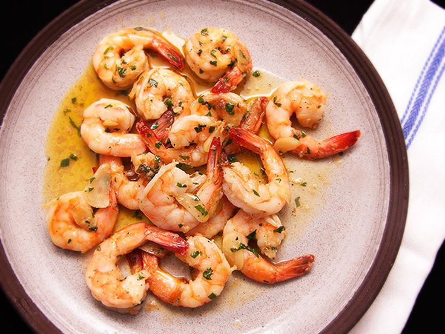

Gambas Al Ajillo

About this Recipe
Gambas Al Ajillo is a Spanish-style garlic shrimp in a lemon-garlic oil sauce, served with a baguette. The baguette soaks up the oil and serves as a vessel on which to eat the shrimp, and the whole experience is heavenly!
I first had this dish at a Philadelphia restaurant called Amada. Though Amada's version is even better, this is a quick recipe that definitely scratches the itch.
Pro-tip: Baguettes keep well in the freezer! When you bring your baguette home from the grocery store, slice it up and put pieces in the freezer. From there, you can just pop them in the oven, and they'll be ready to eat with your shrimp.
For this recipe, look for medium-sized frozen shrimp that is already peeled and deveined. You can easily thaw it when you're ready to cook by running it under cool water at the sink for a few minutes.
Ingredients:
- 1 lb medium-sized peeled and deveined shrimp
- 12 cloves of garlic
- 1/2 cup plus 2 tbsp olive oil
- 2 lemons
- Parsley
- Red Pepper Flakes
- 1/4 tsp baking soda
- Salt
- Baguette
Instructions:
- Thaw shrimp.
- Crush 4 cloves of garlic, thinly slice 4 cloves of garlic, and mince 4 cloves of garlic.
- Zest ONE lemon, and juice both of them.
- Toss raw shrimp in minced garlic, baking soda, and plenty of salt.
- Heat olive oil in a large pan. Add crushed garlic and let gently bubble for 5 minutes, then remove.
- Add sliced garlic and let cook until just starting to get golden, about 1 minute.
- Add shrimp and lots of red pepper flakes.
- Cook until just barely cooked through, about 3 minutes.
- Turn off heat and add lemon zest and most of the lemon juice. (Taste it before adding all of it.) Then add minced parsley.